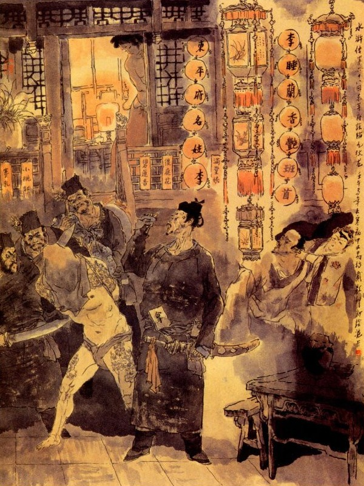
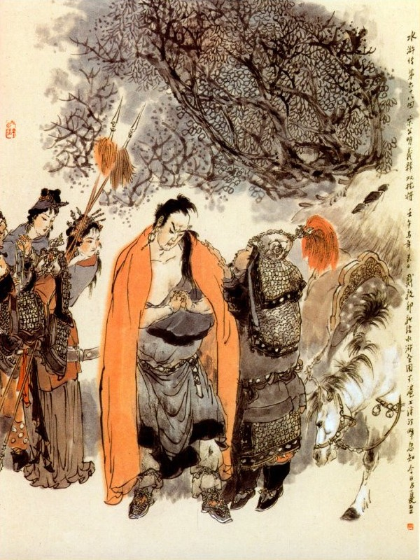

Bấy giờ Tống Giang nói với mọi người rằng:
- Hiện nay sơn trại ta thì thiếu lương và gần đây có phủ Đông Bình và phủ Đông Xương đều là những nơi trù phú mà chúng ta xưa nay cũng chưa từng quấy nhiễu ai. Vậy ngày nay tôi cùng Viên Ngoại rút thẻ xem ai rút phải thẻ nào thì đem binh đến đó mà vây lấy lương thảo rồi ai đánh được trước thì làm chủ Lương Sơn.
Ngô Dụng nói:
- Thế thì rất phải lắm.
Lư Tuấn Nghĩa gạt đi mà rằng:
- Không thế được, Huynh trưởng tất phải làm chủ sơn trại, tôi không khi nào dám thi công như thế.
Tống Giang nhất định thi hành, liền sai Bùi Tuyên viết hai cái thẻ, đem ra khấn trời đất quỷ thần rồi Tống Giang cùng Lư Tuấn Nghĩa phải mỗi người rút một cái. Khi mở ra xem, Tống Gang rút thẻ Đông Bình phủ, Lư Tuấn Nghĩa rút thẻ Đông Xương phủ.
Tống Giang liền truyền lệnh cất quân mã, chia làm hai bọn để đi đánh. Bọn Tống Giang thì có Lâm Xung, Hoa Vinh, Lưu Đường, Sử Tiến, Từ Ninh, Yến Thuận, Lã Phương, Quách Thịnh, Hàn Thao, Bành Dĩ, Khổng Minh, Khổng Lượng, Giải Trân, Giải Bảo, Vương Nụy Hổ, Nhất Trượng Thanh, Trương Thanh, Tôn Nhị Nương, Tôn Tân, Cố Đại Tẩu, Thạch Dũng, Úc bảo Tứ, Vương Đình Lục, Đoàn Cảnh Trụ, tất cả hai mươi viên Đầu Lĩnh và một vạn quân mã bộ và ba viên Đầu Lĩnh thủy quân là Nguyễn Tiểu Nhị, Nguyễn Tiểu Thất, Nguyễn Tiểu Ngũ, đều đem chiến thuyền đi tiếp ứng.
Bọn Lư Tuấn Nghĩa thì có Ngô Dụng, Công Tôn Thắng, Hô Diên Chước, Chu Đồng, Lôi Hoành, Sách Siêu, Dương Chí, Đan Đình Khuê, Ngụy Định Quốc, Tuyên Tán, Hắc Tư Văn, Dương Lâm, Yến Thanh, Âu Bằng, Lăng Chấn, Mã Lâm, Đặng Phi, Thi Ân, Phàn Thụy, Hạng Sung, Lý Cổn, Thời Thiên, Bạch Thắng tất cả hai mươi viên Đầu Lĩnh đem một vạn quân mã bộ và ba viên Đầu Lĩnh Thủy quân là Lý Tuấn, Đồng Uy, Đồng Mãnh dẫn chiến thuyền đi tiếp ứng, còn các Đầu Lĩnh khác đều ở nhà coi trại.
Khi cắt đặt xong Tống Giang dẫn bộ hạ đi đánh núi Đông Bình, Lư Tuấn Nghĩa dẫn các Đầu Lĩnh đi đánh phủ Đông Xương. Hôm đó là mồng một tháng ba, khí trời ấm áp dễ chịu. Tống Giang dẫn một toán quân đến nơi tên là An Sơn Trấn, cách phủ Đông Bình chừng hai ba dặm hạ trại ở đó.
Tống Giang bảo với các Tướng rằng:
- Phủ Đông Bình có quan Thái Thú là Trình Vạn Lý và một người binh mã Đô Giám là Đổng Bình, người Đảng quận tỉnh Hà Đông, khiến hai cây thương rất giỏi, sức khoẻ muôn người không địch nổi, người ta vẫn gọi là Song Thương Tướng xưa nay. Vậy ngày nay ta đánh thành trì, trước nhất phải lấy lễ mà đãi, nghĩa là ta sai hai Tướng đưa chiến thư trước, nếu họ bằng lòng đầu hàng thì thôi không đánh, bằng không thì ta sẽ thi hành, để cho họ không còn trách ta được điều gì nữa, hiện nay ai có thể đưa thơ cho ta được?
Nói dứt lời thì thấy Bảo Úc Tứ chạy ra ứng lời nói lên rằng:
- Chúng tôi có biết mặt Đổng Bình, vậy tôi xin đi đưa thư phen này.
Đoạn rồi lại thấy Vương Đình Lục chạy ra nói rằng:
- Chúng tôi mới đến sơn trại chưa có chút công lao vậy xin cùng đi một thể.
Tống Giang nghe nói cả mừng, liền viết thư nói vay lương thảo rồi đưa cho hai người đem đi. Bấy giờ Trình Thái Thú đương ngồi bàn việc quân với Đổng Đô Giám, chợt thấy người báo:
- Tống Giang sai người hạ chiến thư đến.
Trình Thái Thú gọi Úc Bảo Tứ và Vương Đình Lục vào. Hai người đi vào đưa thư lên trình Thái Thú. Thái Thú xem xong bảo với Đổng Bình rằng:
- Họ định vay tiền lương ở đây, ta nên định như thế nào.
Đổng Bình nghe nói cả giận, bắt đem Úc Bảo Tứ, Vương Đình Lục ra chém.
Trình Thái Thú gạt đi mà rằng:
- Xưa nay hai nước đánh nhau, không bao giờ lại chém người lai sứ, bây giờ cứ đánh cho mỗi người mấy chục roi rồi đuổi họ về, xem họ xử trí ra sao?
Đổng Bình nghe nói, vẫn còn tức giận, liền sai trói hai người lại, đánh bật máu tươi rồi đuổi ra ngoài cổng phủ. Hai người bị đòn khóc lóc với Tống Giang. Tống Giang nghe nói đùng đùng nổi giận, cho hai người về nghỉ ở sơn trại rồi mới bàn định việc quân. Chợt thấy Cửu Văn Long Sử Tiến đến trước trướng kêu rằng:
- Trước đây ở phủ Đông Bình tiểu đệ có quen một đứa con hát tên là Lý Thụy Lan rất là thân mật, vậy nay tôi xin đem ít tiền lần vào trong thành, trọ tạm nhà nó, Ca Ca ước định ngày đánh nhau để cho Đổng Bình ra thành, tôi sẽ đốt lửa trên Cổ Lâu mà hợp đánh làm một thì có thể thành công ngay được.
Tống Giang nghe nói khen phải, liền ưng lời truyền lệnh cho đi.
Sử Tiến lấy tiền nong gói vào khăn gói rồi giắt ngầm khí giới mà bái tạ ra đi. Tống Giang dặn với rằng:
- Hiền đệ vào đó phải lựa cơ tiến thoái, ta ở ngoài này phải đợi tin tức rồi ta mới dám động.
Sử Tiến vâng lời rồi quay ra lẻn vào thành mà thẳng tới nhà Lý Thụy Lan. Khi Sử Tiến tới nơi Đại Bá lấy làm kinh ngạc, liền mời vào nhà trong, gọi con gái là Lý Thụy Lan ra tiếp đãi. Lý Thụy Lan mời Sử Tiến lên trên gác mà hỏi rằng:
- Lâu nay không thấy bóng vía ở đâu, sau khi nghe nói là nhập đảng với Lương Sơn Bạc làm Đại Vương ở đấy, Quan Tư vẫn yết bảng truy nã không được. Mấy hôm nay thấy đồn là quân mã ty kéo đến đánh thành để lấy lương thực, vậy sao anh lại lần đến đây được?
Sử Tiến khẽ đáp rằng:
- Chẳng giấu gì nàng, hiện tôi đương làm Đầu Lĩnh ở Lương Sơn Bạc mà chưa có chút công lao gì. Nay Ca Ca đến đánh Thành ở đây, tôi nói rõ chuyện nàng cho Ca Ca tôi biết và đến đây để dò thám xem sao? Đây có một ít vàng bạc đem đưa để nàng chi dụng, xin chớ để vỡ chuyện ra mà khốn. Nay mai xong việc tôi sẽ đón cả gia quyến nàng lên núi một thể cho vui.
Lý Thụy Lan gật gù vàng bạc đi, cất vàng bạc đi rồi đem rượu ra để thiết đãi. Đoạn rồi Lý Thụy Lan trở xuống nhà bàn với Đại Bá rằng:
- Sử Tiến xưa nay vốn đi lại với nhà ta tử tế, hiện nay hắn làm giặc đi với bọn Lương Sơn, vậy nếu chứa hắn ở đây, không khéo thì nguy cả.
Đại Bá đáp rằng:
- Bọn hảo hán của Lương Sơn Bạc không phải là chuyện chơi, nếu ta đãi họ không ra gì, nay mai họ phá thành vào đến đây thì tất là nguy cả.
Người vợ đứng bên cạnh nghe, mắng luôn rằng:
- Lão già ngu xuẩn, biết được việc gì? Cứ đi ra phủ mà thú ngay đi, đừng để đây rồi lại lụy cả đến mình khó chịu.
Đại Bá nói:
- Hắn đem bao nhiêu tiền bạc cho mình, nay mình không che chở cho hắn thì còn ra nghĩa lý gì nữa.
Mụ vợ lại quát lên rằng:
- Thôi đừng nói nõn nường nữa! Nhà mình hát xướng kiếm ăn, xưa nay chôn hàng mấy vạn người còn chả cần, nữa là một người ấy thì thấm vào đâu? Nếu ông không ra đi thú thì để tôi ra thú với quan rồi bấy giờ ra đây mà gánh tội với nó.
Đại Bá vội vâng lời mà rằng:
- Được, được nếu vậy cứ bảo con gái thiết đãi hắn ta, chớ để lộ chuyện cho hắn biết, để tôi đi với vài người lính đến đây bắt hắn rồi sẽ đem ra thú quan một thể.
Nói đoạn liền cùng nhau tính kế thi hành. Bấy giờ Sử Tiến ngồi trên lầu, thấy Lý Thụy Lan đi lên, nét mặt khi đỏ khi trắng, ra dáng thất thường. Sử Tiến liền hỏi rằng:
- Chẳng hay nàng có việc gì trong nhà mà làm ra vẻ kinh hoàng như vậy?
Lý Thụy Lan đáp:
- Vừa rồi đi lên thang gác, bị vấp một cái xuýt ngã, nên có dáng kinh sợ đó.
Nói đoạn cùng ngồi uống nước với nhau, được một lát thấy có tiếng người dưới thang gác bước lên và ngoài cửa sổ có tiếng người kêu thét rồi có mấy chục tên lính ập vào sân bắt Sử Tiến, trói ghì lại đem giải vào phủ Đông Bình. Khi tới phủ đường, Trình Thái Thú quát rằng:
- Quân này to gan thực, một mình trơ trọi, dám vào đây rồi dò thám hay sao? Phen này không có bố Thụy Lan vào báo thì có lẽ một thành Đông Kinh này nguy vào tay ngươi mất, ngươi phải thú ngay, tên Tống Giang bảo ngươi vào đây làm gì?

Sử Tiến lặng ngắt không nói một câu nào. Đổng Bình nói rằng:
- Quân này không tra tấn thì sao nó chịu nói.
Trình Thái Thú liền thét lên ra lệnh đem Sử Tiến tra đánh, đánh tới hơn trăm côn, Sử Tiến vẫn một mực không nói năng chi cả. Đổng Bình nói rằng:
- Hãy đem gông gông nó lại, cho vào ngục tử tù giam đấy, để đợi bắt được lũ Tống Giang rồi đem giải kinh sư một thể.
Tài cao tất phải mưu cao,
Ở đời kém lựa dễ sao được toàn?
Thương thay sắt đá già gan
Đem thân mắc cạm hồng nhan cho đành!
Nói về Tống Giang, khi sai Sử Tiến đi rồi, liền viết giấy sang thuật rõ tình hình đầu đuôi cho Ngô Dụng biết. Ngô Dụng xem giấy xong lấy làm cả kinh, nói cho Lư Tuấn Nghĩa biết rồi vội vàng đến trại Tống Giang để hỏi chuyện. Khi tới nơi Ngô Dụng hỏi Tống Giang rằng:
- Ai bảo Sử Tiến đi như thế?
Tống Giang đáp:
- Hắn nói là hắn thân đứa con hát ở trong thành, nên hắn tình nguyện xin đi đó.
- Chết nỗi! Sao Huynh trưởng làm như thế? Nếu tôi ở đây thì quyết nhiên không thể cho đi được. Xưa nay những tụi xướng ca vẫn quen lối đưa người cửa trước, rước người cửa sau làm hại kể biết bao nhiêu người tử tế. Dẫu có thân tình đến đâu cũng khó lòng mà lọt những tay mụ đầu kia được. Anh ta đi phen này tất là nguy mất.
- Nếu vậy quân sư nghĩ kế gì để cứu cho hắn?
Ngô Dụng liền gọi Cố Đại Tẩu đến mà dặn rằng:
- Bây giờ nàng phải ăn mặc giả làm người nghèo khổ, đi vào trong thành dò xem tin tức Sử Tiến ra sao rồi về báo ngay lập tức. Nếu hắn bị vào trong ngục rồi thì phải nói khó với người trong ngục, giả làm chỗ bà con khi trước mà vào đưa cơm rồi khẽ dặn hắn ta cứ đêm hôm nguyệt tận (cuối tháng) tháng này vào khoảng tối thì ta kéo quân vào đánh thành, bảo hắn phải kiếm chỗ nào mà thoát thân mới được. Còn nàng cứ đợi ở trong ấy, đến đêm hôm nguyệt tận sẽ phóng lửa lên, để ngoài này tiến binh vào đánh.
Nói đoạn quay lại bảo Tống Giang rằng:
- Bấy giờ Huynh trưởng nên đem quân đến đánh Huyện Vấn Thượng, để cho dân chúng phải chạy vào phủ Đông Bình rồi Cố Đại Tẩu lẫn vào đám ấy mà đi thì không ai biết đến nữa.
Ngô Dụng bàn định xong, lại lên ngựa mà về phủ Đông Xương. Tống Giang cắt Giải Trân, Giải Bảo đem năm trăm quân đi đánh Huyện Vấn Thượng. Nhân dân trong Huyện thấy vậy đều dắt díu nhau kéo sang phủ Đông Bình để lánh nạn.
Bấy giờ Cố Đại Tẩu để đầu bù tóc rối, ăn mặc xuống áo lam lũ, để đánh lộn sòng với bọn dân chúng, chạy vào đến phủ Đông Bình rồi lang thang giả mặt ăn xin mà đến trước nha phủ. Ngày hôm đó biết Sử Tiến đã bị giam trong lao rồi, nàng liền kiếm một phạng cơm đưa đến trước cửa đề lao để đợi. Được một lát, có một người lính già ở trong lao đi ra, Cố Đại Tẩu liền cúi lạy mà khóc như mưa như gió. Người lính già hỏi rằng:
- Mụ này đi đâu mà khóc lóc khổ sỡ thế?
Cố Đại Tẩu gạt nước mắt khóc sụt sùi mà rằng:
- Trong ngục đây có Sử Đại Lang là người chủ cũ của tôi, đã mười năm nay nghe nói đi buôn bán ở những đâu, không sao được gặp. Ngày nay không biết vì cớ sao lại bị giam ở đây như thế. Tội nghiệp quá! Bây giờ không có ai trông nom cơm cháo chi đến, vậy lão tôi đi kêu xin được lưng cơm nguội, muốn đem đến cứu cho ông ta một bữa, dám xin Đại ca thương tình mà cho tôi đưa vào, thực là phúc đức cho tôi vạn bội.
- Hắn là bọn giặc ở Lương Sơn, đã phạm tử tội, ai dám cho mụ vào đấy được?
- Thôi thì người ta có chết cũng là thầy trò tình nghĩa, xin ông làm ơn cho tôi vào một chút, cho khỏi mang tội với trời.
Nói xong lại khóc nức nỡ không thôi. Lão lính thấy vậy, nghĩ thầm trong bụng: "Nếu là đàn ông thì không cho vào được, nhưng một người đàn bà này thì làm gì mà ngại?”
Nghĩ đoạn liền đưa Cố Đại Tẩu vào trong lao. Bấy giờ Sử Tiến cổ đeo gông, lưng đeo xích đương ngồi ngẫm nghĩ trong lao. Khi thấy Cố Đại Tẩu vào thì cả kinh không dám nói lên lời. Cố Đại Tẩu thì giả vờ vừa lấy cơm vừa khóc đưa cho Sử Tiến ăn. Đương khi đó lại có một tên Tiết Cấp còn ít tuổi, chạy đến quát lên rằng:
- Quân quái! Chỗ tử ngục, ai cho ngươi được đến đây mà đưa tin tức. Có muốn sống thì ra ngay, không thì chết đòn bây giờ?
Cố Đại Tẩu biết thế không ngồi được lâu, liền khẽ nói với Sử Tiến rằng:
- Đến đêm nguyệt tận thì liệu thoát thân.
Sử Tiến toan hỏi lại thì người Tiết Cấp đã kéo Cố Đại Tẩu mà ra ngoài cửa mất. Khi đó Sử Tiến nghe được ba tiếng "đêm nguyệt tận", thì trong bụng hiểu ngầm, chắc là đêm đó thì binh mã đánh vào thành để cứu, chàng liền định kế đến tối hôm ấy kiếm cách để thoát thân. Thấm thoát đến hôm hai mươi chín, có hai tên Tiết Cấp ngồi nói chuyện với nhau. Một người kia hỏi:
- Hôm nay là mấy rồi?
Người nọ nhớ ngay liền đáp rằng:
- Hôm nay là ngày nguyệt tận rồi, đêm nay phải mua vàng về lễ cô hồn đây.
Sử Tiến nghe thấy, chắc hôm nay là hôm ba mươi ngày nguyệt tận, chàng liền quyết kế mong đợi đến đêm để hành sự. Gần tối hôm ấy Sử Tiến thấy có một người Tiết Cấp hơi ngà ngà say, ngồi gần ở đó, chàng liền chạy đến mà hỏi vờ rằng:
- Tiết Cấp ơi, ai ở đằng sau thế kia?
Tiết Cấp nghe hỏi quay lại đằng sau để nom. Sử Tiến liền giơ đầu gông giáng cho một nhát vào đầu, chết gục ngay xuống. Đoạn rồi chàng liền nhặt một hòn đá gõ tháo gông ra rồi hai mắt trợn trừng trợn trạc mà đi ra sân. Bấy giờ mấy anh lính ngục nửa tỉnh nửa say ngồi quanh ở đó. Sử Tiến chạy đến đánh mấy anh chết, còn mấy anh thì mau chân chạy thoát được. Sử Tiến đánh xong bọn lính canh rồi, quay vào tháo gông cùm cho năm sáu mươi người tù trong ngục và tháo tung cửa ngục ra, để đợi quân ngoài vào cứu ứng. Khi đó có người vào báo với Trình Thái Thú, Thái Thú xám mặt lại rồi mời Đổng Bình sang để hỏi kế. Đổng Bình nói:
- Cái này trong thành chắc có người do thám, vậy xin cứ cho người vây chặt lấy bọn tù ở đó, để tôi thừa thế ra thành bắt tên Tống Giang về đây. Còn tướng công ở nhà coi giữ thành trì cho cẩn thận mới được.
Nói đoạn liền đem quân mã ra đi, Trình Thái Thú liền sai các Tiết Cấp, cùng các Ngu Hầu, đều cầm gươm giáo đến ngục mà reo hò để canh giữ. Sử Tiến ở trong thấy vậy cũng không dám thò ra nữa. Cố Đại Tẩu nghe thấy tin ấy thì trong lòng lấy làm áy náy tức bực vô cùng mà không biết làm sao cho được.
Vào khoảng canh tư đêm hôm ấy, Đổng Bình dẫn quân mã đến trại Tống Giang. Tống Giang nghe báo, chắc rằng Cố Đại Tẩu lại bị sao đây, liền truyền cho tam quân đều phải chỉnh tề, để ra nghinh địch. Quân mã được lệnh vội vàng chỉnh đốn đội ngũ rồi kéo ra dàn trận đón đánh. Nguyên Đổng Bình là một người tinh ranh lanh lợi, tam giáo cửu lưu không gì là không thạo, quản huyền ty trúc không gì là không hay. Nhân thế mà bọn Sơn Đông Hà Bắc, ai ai cũng gọi tên là Phong Lưu, Song Thương Tướng xưa nay.
Hôm đó khi trời vừa sáng, đôi bên dàn trận xong, Tống Giang đứng bên này trông thấy Đổng Bình, ra dáng tinh anh tuấn tú thì trong bụng có vẻ mừng thầm. Sau lại thấy Đổng Bình đeo một cái túi tên, trong có lá cờ nhỏ viết đôi câu đối rằng:
Anh hùng Song Chiên Tướng,
Phong Lưu Vạn Hộ Hầu
Tống Giang thấy vậy, liền sai Hàn Thao ra đánh trước, Hàn Thao vâng lệnh múa cây giáo sắt, xông ra đánh Đổng Bỉnh. Đổng Bình múa đôi thương sắt như thần hiện quỷ biến, Hàn Thao không thể nào địch nổi, Tống Giang lại sai Kim Sang Ban Từ Ninh, múa Câu Liêm Sang ra đánh thay Hàn Thao. Từ Ninh vâng lệnh, xông ngựa ra đấu với Đổng Bình, đôi bên quần nhau hơn năm mươi hiệp, không quyết được thua, Tống Giang sợ Từ Ninh đuối sức, liền gõ chiên thu quân rồi Từ Ninh cắp sang quay ngựa trở về bản trận. Đổng Bình múa song thương cưỡi ngựa đuổi theo, Tống Giang liền thừa thế trỏ tam quân đổ lại vây chặt lấy Đổng Bình.
Đổng Bình bị vây trong đám quân hết sức hăng hái để đánh xông ra. Tống Giang đứng trên đống đất cao, thấy Đổng Bình chạy sang Đông thì trỏ cờ sang đông, Đổng Bình chạy sang Tây, lại cho cờ hiệu sang Tây, quân sĩ cứ theo hiệu cờ mà bổ vậy rất ngặt. Đổng Bình ra sức múa song thương đánh cự hồi lâu mới tháo vây mà chạy thoát được, Tống Giang cũng không đuổi. Đổng Bình liền thu quân kéo về trong thành.
Đêm hôm ấy Tống Giang đem binh, đến sát chân thành vây khắp cả bốn mặt, duy Cố Đại Tẩu ở trong chưa dám phóng lửa, Sử Tiến chưa dám vượt ngục để ra, nên chưa sao mà đánh phá được thành.
Nói về Trình Thái Thú nguyên có một người con gái hình dung yểy điệu, tính hạnh dịu dàng, Đổng Bình đã mấy phen toan dạm làm vợ mà Trình Vạn Lý nhất định không gả. Bởi thế nên hai bên có ý không bằng lòng với nhau từ trước. Hôm đó nhân ra trận đánh thành, Đổng Bình muốn thừa thế đương lúc chiến tranh mà cho người vào nói với Trình Thái Thú để dạm con gái.
Trình Thái Thú đáp rằng:
- Ta đây là quan văn, Đổng Bình là quan võ, hai đằng đâu gia với nhau thực là đáng lắm. Duy ngày nay thành phủ đương bị giặc cướp, sự thế nguy cấp, nếu nhận lời gả ngay thì tất bị người ta mai mỉa, vậy để khi nào đánh đuổi quân giặc, giữ yên thành quách rồi bấy giờ sẽ bàn đến chuyện hôn nhân cũng không lấy gì làm muộn.
Người kia đem lời ấy về nói với Đổng Bình. Đổng Bình bất đắc dĩ vâng lời để đợi, song từ đó trong lòng lại càng vơ vẩn không vui, e sau này Trình Thái Thú lại phụ lời ư ớc hứa thì bấy giờ xử trí làm sao? Đêm hôm ấy Tống Giang đánh thành rất dữ, Thái Thú liền giục Đổng Bình ra đánh, Đổng Bình cả giận vội đai nịt cẩn thận rồi lên ngựa dẫn quân ra thành để đánh. Tống Giang ra trước cửa trận quát bảo Đổng Bình rằng:
- Ta đây tướng mạnh ngàn người, quân hùng mười vạn, vậy toán quân nhỏ mọn kia thì làm chi được? Sao bằng không xuống đầu thú đi cho khỏi chết?
Đổng Bình cả giận mắng rằng:
- Đồ tiểu lại ngông cuồng, sao dám nói càn nói dở.
Nói đoạn múa song thương thẳng đến đánh Tống Giang. Bên trận Tống Giang, tả có Lâm Xung, hữu có Hoa Vinh đều xông ngựa ra đón đánh Đổng Bình, hai đằng đánh nhau được mấy hiệp thì Lâm Xung, Hoa Vinh quay ngựa thua chạy, Tống Giang cũng kéo quân mã chạy tán loạn ra bốn mặt. Đổng Bình liền ra sức theo đuổi Tống Giang. Khi đuổi đến địa hạt huyện Thọ Xuân, cách thành chừng mười dặm đường, tới một chốn thôn trấn, đôi bên có hai dãy nhà lá, khoảng giữa có đường cái quan, Đổng Bình đương đuổi sát sau lưng Tống Giang thì bỗng thấy phía sau có Khổng Minh, Khổng Lượng xông ra kêu lên rằng:
- Không được hại chúa ta.
Vừa nói dứt lời thì thấy hai bên dãy nhà lá, có tiếng thanh la khua rộn rồi đôi bên cánh cửa mở tung hẳn ra. Đổng Bình thấy vậy vừa toan quay ngựa trở lại thì ngựa bỗng vướng phải dây móc, ngả ngữa quay ra mà vật Đổng Bình xuống đất.
Đoạn rồi bên tả có Nhất Trượng Thanh, Vương Nụy Hổ, nên hữu Trương Thanh, Tôn Nhị Nương, đều xông ra bắt lấy Đổng Bình lột cả mũ áo, cướp cả thương ngựa mà trói lại rồi cho hai viên nữ tướng áp giải đến Tống Giang. Khi đó Tống Giang đương đứng ở dưới gốc cây, đương thấy chúng dong Đổng Bình đến liền quát lui hai nữ tướng mà nói rằng:
- Ta bảo mời Tướng Quân đến đây, ai cho phép các ngươi trói như vậy?

Hai nữ tướng nghe nói đều len lét dạ lui, Tống Giang liền xuống ngựa cởi trói cho Đổng Bình và cởi áo cẩm bào mà đưa cho mặc và cúi đầu lạy tạ. Đổng Bình cũng đáp lễ lại. Tống Giang nói:
- Nếu Tướng Quân có lòng hạ cố thì xin ngài nhận chức chủ sơn trại cho.
Đổng Bình nói:
- Tiểu tướng đã bị bắt tới đây, dẫu chết cũng đáng, còn đâu dám nói đến làm chủ sơn trại?
Tống Giang nói:
- Trong sơn trại tôi hiện thiếu lương thực nên định đến phủ Đông Bình để vay, chứ thực không có ý gì khác cả.
Đổng Bình đáp rằng:
- Trình Vạn Lý nguyên là một tay thầy đồ đi dạy trẻ, nay vớ được một chức béo bỡ như vậy thì tránh sao cho khỏi hại dân? Nếu Huynh trưởng có rộng lượng cho về thì Đổng Bình xin lừa mở cửa thành mà thu lấy lương thảo đền ơn Huynh trưởng.
Tống Giang nghe nói cả mừng, liền sai người đem mũ giáp và ngựa ra trả lại Đổng Bình. Đổng Bình liền đóng đai giáp lên ngựa đi trước. Tống Giang kéo quan mã cuốn cờ im trống theo sau. Khi tới cửa thành Đổng Bình gọi quân sĩ ra mở cửa, quân sĩ trong thành lấy lửa ra soi mặt đổng Bình, bèn mở cửa bỏ đích kiều cho vào. Đổng Bình xông ngựa vào trước chặt đứt khoá sắt ở cửa rồi quân mã Tống Giang ầm ầm theo vào trong thành. Tống Giang truyền lệnh cho quân sĩ không được đốt nhà đốt cửa và không được giết hại lương dân. Đổng Bình vào tới thành, vội vàng chạy đến phủ đường, giết chết cả nhà Trình Vạn Lý và cướp lấy người con gái. Tống Giang lập tức sai người phá cửa nhà lao, đón Sử Tiến ra rồi mở kho tàng lấy các thứ tiền nong lương thực, xếp lên xe cho ba anh em họ Nguyễn áp giải về Lương Sơn trước.
Sử Tiến được thoát ngục ra, liền dẫn người đến nhà Lý Thụy Lan, chém hết cả già trẻ không để lại một ai. Tống Giang đem cả gia tư của Thái Thú phân phát cho nhân dân và yết giấy hiểu dụ cho dân được làm ăn, quân sĩ đã chém được quan tham, còn dân sự không can chi lo sợ.
Hiểu dụ cho dân đâu đấy, Tống Giang liền rút quân ra trấn An Sơn, để toan kéo về Sơn Bạc. Mới hay:
Trên đời mạnh nhất đồng tâm,
Xoay trời chuyển đất ầm ầm như chơi,
Xưa nay những bậc anh tài.
Mượn lò liên lạc làm nơi sinh tồn,
Góp tài góp sức góp khôn,
Rồi ra tính cuộc vuông tròn khó chi?
Ví chăng vây cánh phân ly,
Thì non nước ấy còn gì mà mong.
Lời bàn của Thánh Thán
Đánh hai huyện Đông Bình, Đông Xương, vốn là một chuyện cuối sách, lời văn rất sâu xa và việc lại kín đáo, độc giả cần nên xét tới, tại sao vậy? Vì chủ Lương Sơn Bạc, vốn cơ nghiệp của Tiều Cái, Sử Văn Cung là kẻ thù của Tiều Cái, lời di lệnh của Tiều Cái rằng: Ai bắt sống Sử Văn Cung thì làm chủ ở Lương Sơn Bạc, theo lệnh mà báo thù cho Tiều Cái, nố nghiệp Tiều Cái, mũi tên thề còn kia, rõ ràng chưa quên thì Tống Giang không có thể tranh cùng Lư Tuấn Nghĩa, rất rõ như vậy.
Thế mà Tống Giang lại vẫn cố tranh cho được, tại sao bảo rằng Tống Giang cố tranh cho bằng được? Vì bỏ lệnh Tiều Cái lại bày mưu thi đua mượn lương để đánh hai Phủ Đông Bình, Đông Xương thì Lư Tuấn Nghĩa lại không thể cùng tranh lại với Tống Giang, rõ rệt như vậy.
Hoặc nói rằng: Hai thành kia thì thành nào dễ phá, thành nào khó phá, Tống Giang có tự chọn đâu mà việc thắng với chẳng thắng, Tống Giang cũng chưa hề chắc được, sao biết được rằng, Tống Giang chóng thắng mà Lư Viên Ngoại khó xong, hai người kia mà không đánh nổi cả thì không nói làm gì, nếu hai bên đều thắng như nhau thì ngôi chủ Lương Sơn, lại chưa định vậy, nay nhà thầy nói Lư Tuấn Nghĩa không thể tranh được Tống Giang là nghĩa làm sao?
Hỡi ôi: Nghe đàn mà xét tiếng, đọc sách nên hiểu sự ra há rằng khó đâu? Há phải khó đâu? Hãy xem ở chỗ điều binh khiển tướng mà cho hai người Ngô Dụng, Công Tôn Thắng làm bộ hạ của Lư, ai chẳng cho rằng có hai vị Quân Sư tả hữu thì việc chóng thành, khi việc chóng thành thì kịp tới nơi sơn chủ, ngõ hầu chẳng phụ lòng của Tiều Thiên Vương, thực là thịnh tâm lắm vậy; Song ta cho rằng Tôn, Ngô tuy ở dưới trướng họ Lư, thế mà không phải ở dưới trướng họ Lư đâu, vẫn là dưới trướng họ Tống, mặc dầu không ở dưới trướng họ Tống lúc này.
Vì rằng Tôn, Ngô tuy ở dưới trướng họ Lư, song không chịu thi hành kế hoạch mà cách xa họ Tống, khi thấy đưa thư đến hỏi thì vội vàng phi ngựa để bày mưu, không tiếc sức gì cũng chẳng khác chi ở dưới trướng Tống Giang bấy lâu vậy. Hãy xét khi bỏ Lương Nhữ Địch ở dưới nước, đó chẳng phải là mưu của người đấy ư? Khi Tống Giang chưa tới thì không bày mưu, khi Tống Giang tới, mới đua nhau giở thuật ra là ý làm sao? Thấy vì Tống Giang rõ quá? Aáy may mà không đành nổi Mộc Vũ Tiến, nếu lại đánh được ngay Một Vũ Tiễn thì Ngô, Tôn tất phải làm dùng dắng, đợi Tống Giang tới mới quyết định, đánh xong thành, cứ thế thì họ Tống phải xong việc mà họ Lư vẫn khó xong việc, cho nên ta bảo Lư Tuấn Nghĩa không thể nào tranh được nổi Tống Giang, rõ rệt như thế, mới hay một hồi tả lại đánh Đông Bình, Đông Xương, lời văn sâu, chép duyệt kín, độc giả cần phải xét ra. Sách này nhiều chỗ muốn phạm đề nhau, như Giải Trân vượt ngục, lại đến Sử Tiến vượt ngục, cùng có Cố Đại Tẩu giúp nên đấy như cùng một đề tài, chợt đâu lại hẹn lấy hai chữ Nguyệt Tận làm khác đi, vậy sao mới rõ trong sự giống nhau lại khác nhai xa, diễn ra nhiều văn tự khác, nếu kẽ vô tài thì không thể nào xếp đặt được đến thế mà tả ra vậy. Giữa đám đao thương, kiếm, kích rối như tơ ngốt tựa lửa, lại bỗng đâu có chuyện Đồng Tướng Quân cầu thân khiến độc giả phải lạ mắt vì nhiều biến sắc.